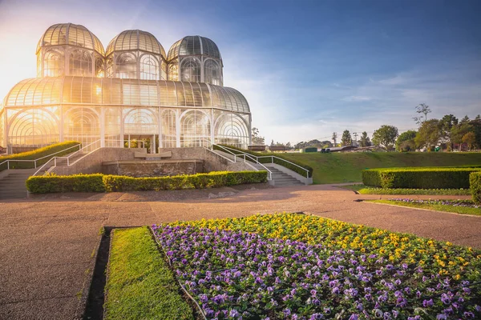
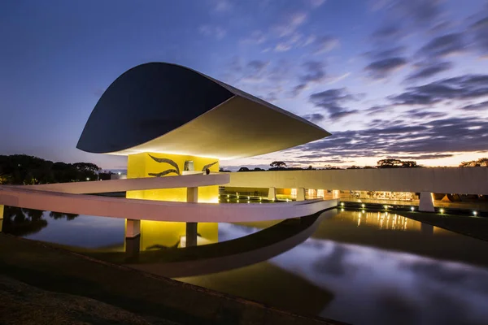
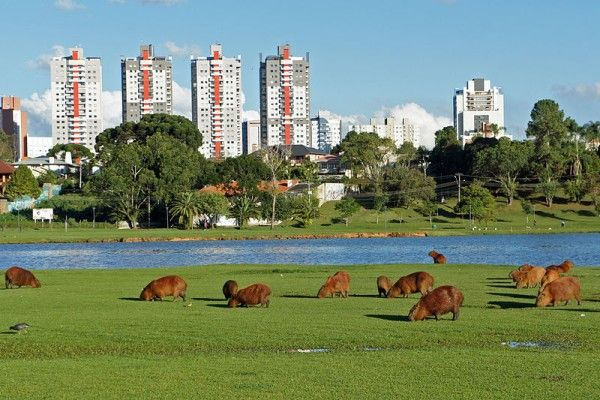

| Ponto Turístico | Imagens | Descrição |
|---|---|---|
| Jardim Botânico |  |
O Jardim Botânico é um dos principais cartões-postais de Curitiba, famoso por sua estufa de vidro. |
| Ópera de Arame |  |
A Ópera de Arame é um teatro único, feito de estrutura metálica e rodeado por um lago e vegetação. |
| Museu Oscar Niemeyer |  |
Também conhecido como Museu do Olho, é um museu de arte moderna com uma arquitetura icônica. |
| Parque Barigui |  |
Um dos maiores parques da cidade, ideal para lazer e prática de esportes ao ar livre. |